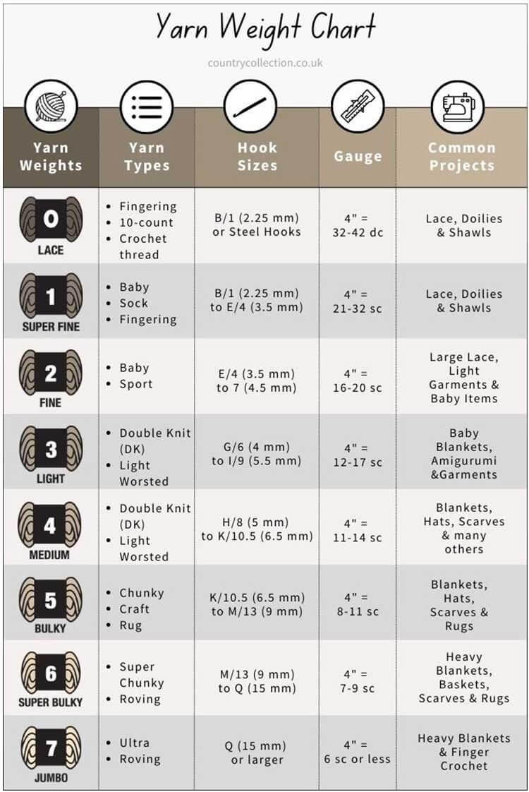

Welcome to the Crochet section of The Yarn Corner! Crocheting involves using a hook to pull loops of yarn through each other, which creates "stitches". Some of the basic stitches that are invovled in crochet are the chain stitch (which is also known as the foundation stitch), the single crochet, and the double crochet. Beginners must learn how to hold the hook and yarn comfortably, create a starting chain, and build rows or rounds from there. Working one loop at a time makes it very easy to fix any mistakes, which makes crochet a very beginner-friendly entry point into the world of yarn crafts!
Crocheting only requires a few basic supplies to get started: basic yarn and a crochet hook!

With crocheting there are a few important stitches that are essential for any crafter to master. Before we get into those stitches, it's important to first understand how to make a slip knot.
A slip knot is the most common way to start a crochet project. It's a simple loop that can be adjusted and tightened as needed.
The chain stitch (ch) is the most basic stitch in crochet and is used to start most projects by creating a foundation row.
The slip stitch (sl st) is a simple stitch used to join rounds or move yarn across stitches without adding any height.
The single crochet (sc) is a fundamental tight stitch that creates a dense result and is great for beginners and sturdy projects.
The half double crochet (hdc) is a versatile stitch that creates a slightly taller stitch than the single crochet.
The double crochet (dc) is a taller stitch that builds up quickly and creates a more airy and open result.
The treble crochet (tr) is the tallest basic stitch and creates long loops and a loose and lacy texture.
For visual learners, we have compiled a list of YouTube tutorials that go over some of the basics of crochet.